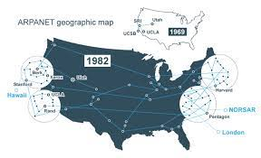
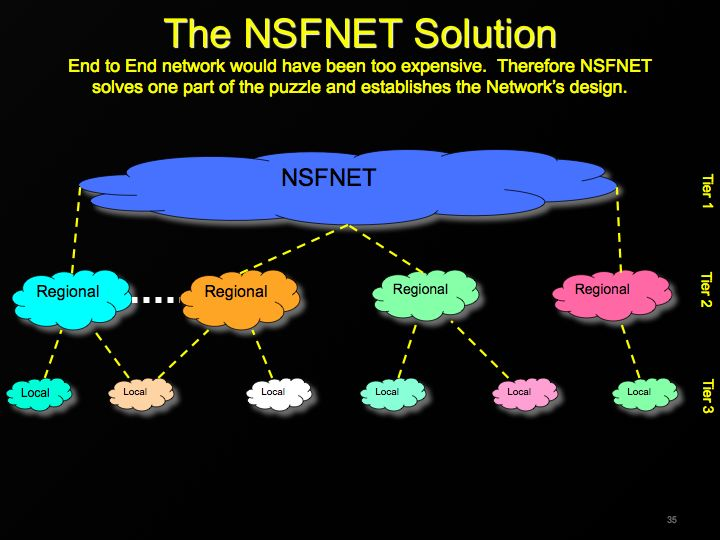

1960
A Internet surgiu a partir de um projeto da agência norte-americana Advanced Research and Projects Agency (ARPA) objetivando conectar os computadores dos seus departamentos de pesquisa. A Internet nasceu à partir da ARPANET, que interligava quatro instituições: Universidade da Califórnia, LA e Santa Bárbara, Instituto de Pesquisa de Stanford e Universidade de Utah, tendo início em 1969.
1970
Os pesquisadores e estudiosos do assunto receberam o projeto à disposição, para trabalhar. Deste estudo que perdurou na década de 70, nasceu o TCP/IP (Transmission Control Protocol / Internet Protocol), grupo de protocolos que é a base da Internet desde aqueles tempos até hoje. A Universidade da Califórnia de Berkley implantou os protocolos TCP/IP ao Sistema Operacional UNIX, possibilitando a integração de várias universidades à ARPANET.

1980
Nesta época, início da década de 80, redes de computadores de outros centros de pesquisa foram integrados à rede da ARPA. Em 1985, a entidade americana National Science Foundation (NSF) interligou os supercomputadores do seu centro de pesquisa, a NSFNET, que no ano seguinte entrou para a ARPANET. A ARPANET e a NSFNET passaram a ser as duas espinhas dorsais (backbone) de uma nova rede que junto com os demais computadores ligados a elas, era a INTERNET. Dois anos depois, em 1988, a NSFNET passou a ser mantida com apoio das organizações IBM, MCI (empresa de telecomunicações) e MERIT (instituição responsável pela rede de computadores de instituições educacionais de Michigan), que formaram uma associação conhecida como Advanced Network and Services (ANS).
1990
Em 1990 o backbone ARPANET foi desativado, criando-se em seu lugar o backbone Defense Research Internet (DRI) em 1991/1992 a ANSNET, que passou a ser o backbone principal da Internet, nessa mesma época iniciou-se o desenvolvimento de um backbone europeu (EBONE), interligando alguns países da Europa à Internet. A partir de 1993 a Internet deixou de ser uma instituição de natureza apenas acadêmica e passou a ser explorada comercialmente, tanto para a construção de novos backbones por empresas privadas (PSI, UUnet, Sprint,...) como para fornecimento de serviços diversos, abertura essa a nível mundial.
2000
Com o advento do TCP/IP, redes individuais, educacionais e comerciais começaram a ter acesso à comunicação quase imediata e às informações disponíveis oferecidas pela Internet. A conectividade deixou de ser exclusiva e se tornou disponível para todos graças à WWW. Assim, a Internet passou a fazer parte de todos os âmbitos da sociedade, incluindo as atividades comerciais, uma vez que consegue satisfazer necessidades e encontrar formas mais adequadas de executar processos, por exemplo, por meio de plataformas digitais. A Internet mudou radicalmente desde a sua origem. Já não se trata mais de um espaço onde e-mails são trocados e informações são armazenadas. Agora, ela está em todos os objetos e lugares em que oferece valor.